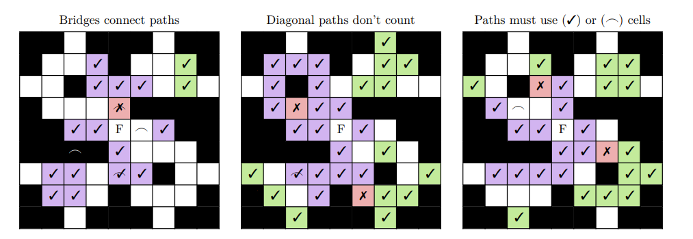

Individual Round
The individual round has changed since last year to not count towards a team's score. It is a multiple choice round consisting of ten questions, each with five options. All competitors from each team may partake in the individual round. The round is done (as the name suggests) individually, so there is no team communication.
This round lasts 30 minutes and is not worth any points.
Lock-in Round
Lock-in is the second round, consisting of two questions, which explore unfamiliar territories of mathematics in greater depth.
Each question focusses on a specific concept: part of this round's difficulty comes from understanding a new concept and engaging with it.
The questions are split up into multiple parts which require teams to produce mathematical reasoning, mathematical explanation, or mathematical working. The parts will indicate what kind of answer and level of depth is expected, but the team will
need to exercise their own judgement in determining the level of depth required.
There are two questions; the round lasts 60 minutes.
Maps Round
Maps is the second round which teams solve problems in a 9 × 9 grid, called the map. The centremost cell is the free cell (labelled ‘F’ in the examples); black cells do not have questions.
Teams submit integer answers to all questions. Any correctly-answered question awards its points as indicated by the question paper or the map. If a correctly-answered question is connected to the free cell by a series of horizontal and vertical paths
of correct answers, it scores twice as many points!
Lastly, each team gets a bridge which they can place on any cell at the end of the round. It scores no points, but the cell it’s
on will always count as a cell which joins correct answers to the free cell.
In the examples below, cells with: checkmarks (✓) were correctly answered; crosses (✗) were incorrectly answered; (F) indicates the free cell; (_) indicates the bridge; other cells had no submission. The cells shaded in green scored full points for the
teams; purple cells scored double. [The first example has more bridges than usual for the purpose of demonstration.

There are 44 problems in total; the round lasts 75 minutes.
Guts Round
Guts is the last round of the competition, which requires competitors to be economical with their time. Teams submit integer
answers to all 27 questions, grouped in triplets. The triplets progressively increase in difficulty, and their point value increases
accordingly.
The breakdown of points is as follows:
Round 1 2 3 4 5 6 7 8 9
Score per question 3 4 5 5 6 6 7 8 16
Each team sends one of their members to a problem station to pick up copies of the first set of problems. Teams can only begin the next problem set after having submitted their current one, and are not able to resubmit solutions.
The last triplet is an estimathon in which contestants offer an estimate to the actual answer – teams whose answer is closer to the actual value score higher. The exact formula is that your score is 16 × min{A,E}/max{1,A,E} rounded to the nearest integer, where A is the actual solution and E is the team's estimated guess.
Lastly, the scores on this round are displayed live at the front. No pressure!
There are 27 questions; the round lasts 80 minutes.
...and other surprises
Last year, there were guest speakers as well as free pizza. We're still sorting out those details, so we can't promise anything just yet, but we definitely plan on having additional surprises!